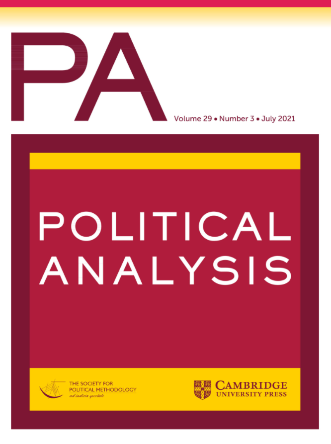

收录于合集 #新刊速递 123个

期刊简介

《政治分析》（ Political Analysis ）是一份1948年起发行的同行评审学术期刊，由剑桥大学出版社为政治学方法学会出版。该期刊每年出版4次，主要发表讨论政治学研究方法（尤其是量化研究）的论文。据2020年发布的期刊引证报告指，《政治分析》的影响因子为8.6，在政治科学类的期刊排名第1/182位。
本期编委 ****
编译： 程朵依 李思 李月云 吕紫烟 阮辰阳 徐一凡 姚寰宇
审校： 黄慧彬 杨沛鑫 姚寰宇
排版： 陈力天
美编： 方引弓
本期目录
1. 测量政治学中的农村连续性
Measuring the Rural Continuum in Political Science
2. 未观察网络中的溢出效应
Spillover Effects in the Presence of Unobserved Networks
3.描绘政治团体：立法政治中游说网络
的统计分析
Mapping political communities: A statistical analysis of lobbying networks in legislative politics
4.测量政党与政府选举竞争力的一般方法
A General Approach to Measuring Electoral Competitiveness for Parties and Governments
5.在没有透明度的情况下，以控制变量实现统计显著性
Achieving Statistical Significance with Control Variables and Without Transparency
6. 重复研究中的发表偏见
Publication Biases in Replication Studies
7. 衡量种族偏见：基于错误归因的社会心理学工具能否揭示经济学博弈无法揭示的群体偏见?
Measuring Ethnic Bias: Can Misattribution-Based Tools from Social Psychology Reveal Group Biases that Economics Games Cannot?
01
测量政治学中的农村连续性
题目： Measuring the Rural Continuum in Political Science
作者： Zoe Nemerever，美国加州大学圣地亚哥分校政治学系；Melissa Rogers，美国克莱蒙特研究生大学政治与经济系。
摘要： 最近对美国政治的描述主要集中在城乡政治行为差距上。关于农村政治的研究正在增多，但可能由于难以界定和衡量哪些美国人有资格成为“农村”而受到阻碍。我们讨论了研究农村性的理论和实证挑战。现有的许多研究都没有关注乡村地理学的概念化与测量性。我们专注于改进对不同农村概念的判断，并提供有关美国各州立法区城乡测量的新数据集。我们在两项关于农村的政治研究中仔细检查了结构效度和衡量标准。首先，我们复制了Flavin和Franko的研究来证明实证结果可能对农村居民的测量标准十分敏感。其次，我们使用Mummolo和Nall的调查数据表明农村自我认同并没有被进行基于地方的客观分类，建议重新思考有关农村身份的理论和实证解释。我们总结了使用现有工具实施农村化的策略。
Recent accounts of American politics focus heavily on urban–rural gaps in political behavior. Rural politics research is growing but may be stymied by difficulties defining and measuring which Americans qualify as “rural.” We discuss theoretical and empirical challenges to studying rurality. Much existing research has been inattentive to conceptualization and measurement of rural geography. We focus on improving estimation of different notions of rurality and provide a new dataset on urban–rural measurement of U.S. state legislative districts. We scrutinize construct validity and measurement in two studies of rural politics. First, we replicate Flavin and Franko (2020, Political Behavior, 845–864) to demonstrate empirical results may be sensitive to measurement of rural residents. Second, we use Mummolo and Nall’s (2017, The Journal of Politics, 45–59) survey data to show rural self-identification is not well-captured with objective, place-based classifications, suggesting a rethinking of theoretical and empirical accounts of rural identity. We conclude with strategies for operationalizing rurality using readily available tools.
02
未观察网络中的溢出效应
题目： Spillover Effects in the Presence of Unobserved Networks
作者： Naoki Egami，哥伦比亚大学政治系助理教授，主要研究兴趣为政治学方法论，和政治和社会科学中的统计方法。
摘要： 当实验对象能够相互发生关系时，一个实验对象的结果可能受到其他对象之状态的影响。在许多社会科学实验中，这种溢出效应可能在多个网络中出现。比如，推特社会实验中的线上网络和线下面对面网络就是一例。因此，为理解人们如何使用不同的网络，对每一特定网络中的溢出效应进行估计是很必要的。然而，对这些特定于某个网络的溢出效应的无偏估计需要一个看上去自相矛盾的前提，即研究人员要观察所有相关的网络。我们发现，与一般的忽略变量偏差不同，即使处理分配是随机的，且当未观察到的网络和对象网络是相互独立生成的，基于未观察到的网络造成的偏差仍然存在。我们发展出参数和非参数敏感度分析方法，研究者可以凭借这些方法评估未观察到的网络对因果关系造成的影响。我们通过基于显示推特网络的仿真研究和基于中国网络现场实验的实证应用来说明所提出的方法。
When experimental subjects can interact with each other, the outcome of one individual may be affected by the treatment status of others. In many social science experiments, such spillover effects may occur through multiple networks, for example, through both online and offline face-to-face networks in a Twitter experiment. Thus, to understand how people use different networks, it is essential to estimate the spillover effect in each specific network separately. However, the unbiased estimation of these network-specific spillover effects requires an often-violated assumption that researchers observe all relevant networks. We show that, unlike conventional omitted variable bias, bias due to unobserved networks remains even when treatment assignment is randomized and when unobserved networks and a network of interest are independently generated. We then develop parametric and nonparametric sensitivity analysis methods, with which researchers can assess the potential influence of unobserved networks on causal findings. We illustrate the proposed methods with a simulation study based on a real-world Twitter network and an empirical application based on a network field experiment in China.
03
描绘政治团体：立法政治中游说网络
的统计分析
题目： Mapping political communities: A statistical analysis of lobbying networks in legislative politics
作者： In Song Kim，麻省理工学院政治科学系副教授。
摘要： 本文提出了一种新的方法来推断政治对象在驱动他们的可视的相互作用的集体活动团体中的潜在成员身份。与现有方法不同，本文提出的二分链接团体模型（biLCM）(1)适用于两组研究对象，(2)考虑到研究对象可能是多个团体的成员，(3)允许一对研究对象以一种以上的方式相互联系。我们用这种方法来阐述美国第113届国会中由特殊利益集团和政客组成的立法团体。以往对利益集团政治的实证研究由于难以直接观察利益集团与政治家之间的联系而受到限制。因此，我们首先以对游说活动的200多万篇文本描述为基础构建了一个原始数据集，将支持国会法案的政客与游说这些法案的利益集团联系起来。然后，我们使用biLCM对研究对象的团体成员身份进行定量研究，范围从根据行业利益和司法委员会成员身份的狭窄定向的联系，到跨多个政策领域的广泛的多方面联系。
We propose a new methodology for inferring political actors’ latent memberships in communities of collective activity that drive their observable interactions. Unlike existing methods, the proposed Bipartite Link Community Model (biLCM) (1) applies to two groups of actors, (2) takes into account that actors may be members of more than one community, and (3) allows a pair of actors to interact in more than one way. We apply this method to characterize legislative communities of special interest groups and politicians in the 113th U.S. Congress. Previous empirical studies of interest group politics have been limited by the difficulty of observing the ties between interest groups and politicians directly. We therefore first construct an original dataset that connects the politicians who sponsor congressional bills with the interest groups that lobby on those bills based on more than two million textual descriptions of lobbying activities. We then use the biLCM to make quantitative measurements of actors’ community memberships ranging from narrow targeted interactions according to industry interests and jurisdictional committee membership to broad multifaceted connections across multiple policy domains.
04
测量政党与政府选举竞争力的一般方法
题目： A General Approach to Measuring Electoral Competitiveness for Parties and Governments
作者： Axel Cronert，乌普萨拉大学政府学院研究员；Pär Nyman，乌普萨拉大学政府学院博士后研究员。
摘要： 我们提出了一种测量政党与政府选举竞争力的一般方法，该方法与以往方法相比有两点不同。第一，该方法使我们能够去估计现任官员重新获选的实际可能性，这种可能性比最广泛使用的其他指标更接近利益的理论概念。第二，该方法同时包含对选举前与选举后竞争力的测量，其中选举前竞争力指对即将来临的选举结果的不确定性，而选举后竞争力指在已知选举情况下对有关谁能够组建政府的不确定性。该方法不仅可以广泛应用于不同的制度设定且适用比较研究，还可以十分有利于多政党民主政体的研究。为了充分证明该方法的全部潜力，我们首先用该方法考察在瑞典的1700个次地方政府选举情况，从中可以体现出该方法相较于以往方法的三个优点：第一，我们的选举可能性测量方法可以表体现出选举周期的巨大变化；第二，该方法既适用于单一政党又适用于政府；第三，该方法更有能力预测现任官员重新获选的可能性。其次，我们对34个民主政体的400次全国性选举进行考察，结果表明该方法在更富挑战性的跨国设定之下依然有较高的适用性。
We develop a general approach to measuring electoral competitiveness for parties and governments, which is distinct from existing approaches in two ways. First, it allows us to estimate the actual probability of re-electing the incumbent into office, which lies closer to the theoretical concept of interest than most widely used proxies. Second, it incorporates both pre- electoral competitiveness—that is, the uncertainty about the outcome of the upcoming election—and post-electoral competitiveness—that is, the uncertainty concerning who will form the government given a certain election result. The approach can be applied to, and compared across, a multitude of institutional settings and is particularly advantageous in analyses of multiparty democracies. To demonstrate its full potential, we first apply the approach on 1,700 local government elections in Sweden. Three advantages over existing approaches are documented: Our election probability measure shows substantial variation over the election cycle, it can be accurately measured for a single party as well as a government, and it is more capable of predicting re- election into office than any previous measure of electoral competitiveness. A second application on 400 national elections in 34 democracies shows that the approach also works well in a more challenging cross-national setting.
05
在没有透明度的情况下，以控制变量实现统计显著性
题目： Achieving Statistical Significance with Control Variables and Without Transparency
作者： Gabriel S. Lenz，加州大学伯克利分校政治学系；Alexander Sahn，加州大学伯克利分校政治学系。
摘要： 有多少文章的研究结果依赖于抑制效应？又有多少人披露了这个事实？根据抑制效应，控制变量会放大预估结果效应。研究人员希望确保作者对此有一个强有力的解释，特别是当关键发现的统计意义取决于抑制效应时，因此他们常常会仔细检查抑制效应。在对一份权威期刊的观察性研究的再分析中，我们发现超过30%的论文依赖于统计显著性的抑制效应。尽管包括控制变量在内的关键效应估计值的增加是合理的，但没有一篇文章能够证明或披露它们的合理性。这或表明了审查过程中的漏洞：期刊正在接受依赖抑制效应的文章，而读者、评论者或编辑却对此毫不知情。
How often do articles depend on suppression effects for their findings? How often do they disclose this fact? By suppression effects, we mean control- variable-induced increases in estimated effect sizes. Researchers generally scrutinize suppression effects as they want reassurance that authors have a strong explanation for them, especially when the statistical significance of the key finding depends on them. In a reanalysis of observational studies from a leading journal, we find that over 30% of articles depend on suppression effects for statistical significance. Although increases in key effect estimates from including control variables are of course potentially justifiable, none of the articles justify or disclose them. These findings may point to a hole in the review process: journals are accepting articles that depend on suppression effects without readers, reviewers, or editors being made aware.
06
重复研究中的发表偏见
题目： Publication Biases in Replication Studies
作者： Adam J. Berinsky（亚当·伯林斯基）：麻省理工学院政治学系教授兼政治实验研究实验室主任。研究方向是政治行为、公众舆论和外交政策，过去十年一直在研究政治谣言和错误信息。
James N. Druckman（詹姆斯·德鲁克曼）：美国西北大学政治学系教授，研究方向为偏好形成、政治传播和实验方法论。
Teppei Yamamoto（山本彻平）：麻省理工学院政治学系副教授，数据、系统和社会研究所统计和数据科学中心教员，兼任麻省理工学院政治学系政治方法学实验室主任。研究主要集中在因果推理的统计方法上，包括因果归因、因果中介、因果调节和有测量误差的因果推理。
摘要： 科学界最强有力的发现之一是“发表偏见”的出现。特别值得注意的是“文件抽屉偏见”，即学术杂志更倾向于发表具有统计显著性的结果，而没有统计显著性的结果只能放在研究者的抽屉之中。随着对这种偏见认识的加深以及对“开放科学”呼声的加大，人们对重复研究日益重视。然而，很少有人探讨重复研究中的发表偏见及其后果。本文提供了一个囊括初研、重复的出版过程模型，通过使用该模型描述出三种发表偏见: (1)文件抽屉偏见；(2)反对发表重复研究的“重复研究”偏见；(3)“明了偏见”，即与先前研究相反的重复研究结果更可能被发表。文章借助了在美国博士学位授予机构任教的政治学教授进行的一个小实验来估计模型的参数。尽管那些明确涉及重复研究的偏见不太明显，研究者还是发现了这三类偏见存在的证据，这对重复研究来说是个好兆头。也就是说，所有偏见集合在一起增加了文献中“假阳性”的数量（“阳性”结果指具有显著发现意义的结果，发表偏见最为直接的消极后果是迫使研究者得到“阳性”结果以发表论文）。最后，我们讨论了未来关于发表偏见的研究路径。
One of the strongest findings across the sciences is that publication bias occurs. Of particular note is a “file drawer bias” where statistically significant results are privileged over nonsignificant results. Recognition of this bias, along with increased calls for “open science,” has led to an emphasis on replication studies. Yet, few have explored publication bias and its consequences in replication studies. We offer a model of the publication process involving an initial study and a replication. We use the model to describe three types of publication biases: (1) file drawer bias, (2) a “repeat study” bias against the publication of replication studies, and (3) a “gotcha bias” where replication results that run contrary to a prior study are more likely to be published. We estimate the model’s parameters with a vignette experiment conducted with political science professors teaching at Ph.D. granting institutions in the United States. We find evidence of all three types of bias, although those explicitly involving replication studies are notably smaller. This bodes well for the replication movement. That said, the aggregation of all of the biases increases the number of false positives in a literature. We conclude by discussing a path for future work on publication biases.
07
衡量种族偏见：基于错误归因的社会心理学工具能否揭示经济学博弈无法揭示的群体偏见?
题目： Measuring Ethnic Bias: Can Misattribution-Based Tools from Social Psychology Reveal Group Biases that Economics Games Cannot?
作者： Ashley Blum，加州大学洛杉矶分校政治科学系博士研究生；Chad Hazlett加州大学洛杉矶分校统计与政治科学系助理教授；Daniel N. Posner，加州大学洛杉矶分校政治科学系教授。
摘要： 在政治学和经济学中，“独裁者”和“公共产品”等经济学博弈被广泛用于衡量种族偏见。然而，这些工具可能无法像预期的那样衡量偏见，因为它们容易受到自我表现担忧的影响，和/或未能捕捉到根植于更自动的联想和情感反应的偏见。我们研究了一组基于错误归因的方法，这些方法改编自社会心理学，可能会回避这些担忧。肯尼亚内罗毕的参与者完成了一系列常见的经济学博弈，同时完成了这些错误归因任务的不同版本，这些错误归因任务适用于这种设置，每个版本都是为了检测相对于同族人对非同族人的偏见。一些错误归因任务显示出(预期的)偏见的明显证据，可以说反映了积极/消极情绪的差异和对非同族人更高的威胁感知。相比之下，独裁者和公共物品博弈无法检测到对非同族人和同族人的行为有任何偏见。我们的结论是，种族和其他偏见的研究人员可能受益于在他们的工具包中包括基于错误归因的程序，以扩大他们的研究对其敏感的偏见集合。
Economics games such as the Dictator and Public Goods Games have been widely used to measure ethnic bias in political science and economics. Yet these tools may fail to measure bias as intended because they are vulnerable to self-presentational concerns and/or fail to capture bias rooted in more automatic associative and affective reactions. We examine a set of misattribution-based approaches, adapted from social psychology, that may sidestep these concerns. Participants in Nairobi, Kenya completed a series of common economics games alongside versions of these misattribution tasks adapted for this setting, each designed to detect bias toward noncoethnics relative to coethnics. Several of the misattribution tasks show clear evidence of (expected) bias, arguably reflecting differences in positive/negative affect and heightened threat perception toward noncoethnics. The Dictator and Public Goods Games, by contrast, are unable to detect any bias in behavior toward noncoethnics versus coethnics. We conclude that researchers of ethnic and other biases may benefit from including misattribution-based procedures in their tool kits to widen the set of biases to which their investigations are sensitive.

国政学人
支持学术公益与知识传播
微信扫一扫赞赏作者 __赞赏
已喜欢，对作者说句悄悄话
取消 __
发送给作者
发送
最多40字，当前共字
上一页 1/3 下一页
长按二维码向我转账
支持学术公益与知识传播
受苹果公司新规定影响，微信 iOS 版的赞赏功能被关闭，可通过二维码转账支持公众号。